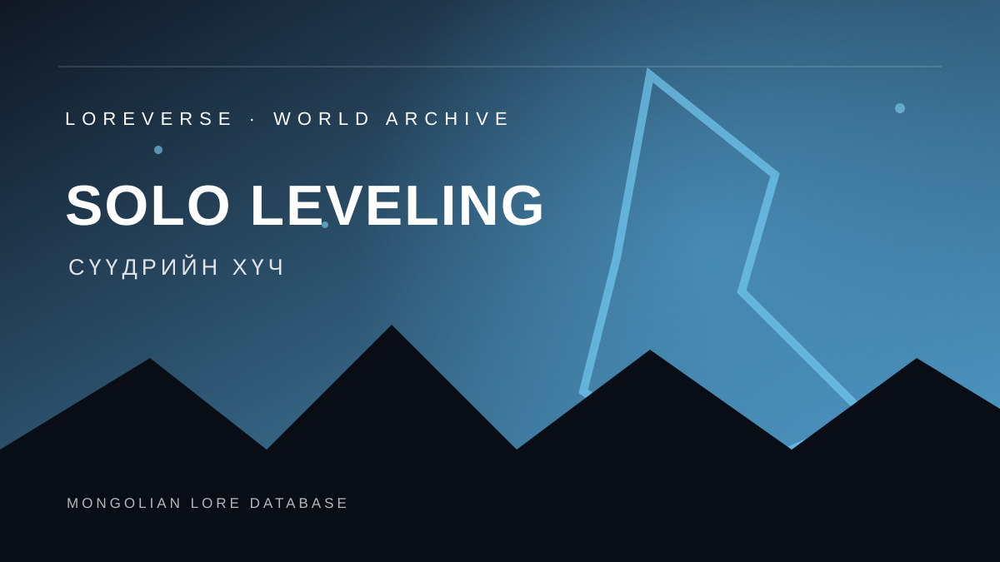

Ертөнц ба түүхэн нөхцөл
Хаалга, гяндан, мана, ангуучдын холбоо болон олон улсын хүчний байгууллагууд орчин үеийн нийгмийн шинэ тогтолцоог бий болгосон. Гяндангийн аюулын зэрэглэл нь хотуудын аюулгүй байдал, эдийн засагт нөлөөлнө.
Хаалгууд нээгдэж, мангасуудтай тулалддаг ангуучид бий болсон ертөнцөд хамгийн сул зэрэглэлийн ангууч Сон Жинү аюултай давхар гянданд орсны дараа зөвхөн өөрт нь харагдах даалгавар, түвшин ахих системтэй болно.

Хаалга, гяндан, мана, ангуучдын холбоо болон олон улсын хүчний байгууллагууд орчин үеийн нийгмийн шинэ тогтолцоог бий болгосон. Гяндангийн аюулын зэрэглэл нь хотуудын аюулгүй байдал, эдийн засагт нөлөөлнө.
Ангуучид сэргэлтийн дараа E-ээс S хүртэлх зэрэглэлээр үнэлэгддэг бөгөөд ихэнх хүний хүч дахин өсдөггүй. Жинүгийн System нь даалгавар, статистик, түвшин, ур чадвар, inventory зэрэг тоглоомын интерфэйсээр түүнийг хөгжүүлдэг онцгой механизм.
Сон Жинү — эхэндээ хамгийн сул ангууч; Юү Жинхо — түүний итгэлт хамтрагч; Ча Хэ-ин — S зэрэглэлийн ангууч; Го Гон-хи — Солонгосын ангуучдын холбооны тэргүүн; И Гю-хван болон бусад ангуучид үйл явдалд оролцоно.
Солонгосын Ангуучдын холбоо, олон улсын ангуучдын холбоод, гильдүүд, Үндэсний түвшний ангуучид, цаашлаад Захирагчид ба Эзэдийн хүчний талууд.
Хаалга нээгдэх ба ангуучдын тогтолцоо бий болох → Давхар гяндангийн хэрэг → System-ийн даалгаврууд → Жинүгийн хүч өсөх → Олон улсын хэмжээний аюул → Захирагчид ба Эзэдийн мөргөлдөөн.
Албан ёсны анимэний сайт: https://sololeveling-anime.net/
Анимэ, вэб роман, манхвагийн үйл явдлыг тус тусад нь тэмдэглэнэ.
Энэ хуудас нь LOREVERSE-ийн Монгол хэл дээрх фэн судалгааны материал. Албан ёсны бүтээл биш. Канон, дасан зохицуулалт, фэн таамгийг тусад нь тэмдэглэн шинэчилнэ.
Энэ хэсэг нь ертөнцийн дотоод логик, дүрийн зорилго, хүчний дүрэм, улс төрийн нөхцөл болон үйл явдлын шалтгаан-үр дагаврыг нэгтгэнэ. Спойлерын агуулгатай.
Ердийн дэлхийд Gate нээгдэж, мангас дүүрсэн dungeon-уудтай холбогдсоноор хүн төрөлхтний нийгэм өөрчлөгдөнө. Зарим хүн сэрж Hunter болж, ер бусын хүч авдаг. Улс орнуудын Hunter Association, Guild-үүд аюултай Gate-үүдийг цэвэрлэх, шагнал, нөөц хуваарилах үүрэгтэй.
Hunters нь E-ээс S хүртэл ранктай; сэрсний дараах хүчийг ердийн тохиолдолд дахин хэмжихэд өөрчлөгдөхгүй гэж үздэг. Sung Jinwoo-д зөвхөн түүнд харагдах System гарч ирж, quest, level, stat, inventory, class progression өгдөг. Энэ нь бусад Hunter-ийн ердийн сэрэлтийн системээс ялгаатай. Shadow Extraction нь ялагдсан дайсны сүүдрийг армид нэгтгэх онцгой чадвар.
Sung Jinwoo — хамгийн сул Hunter-ээс System-ийн цорын ганц тоглогч болон өснө; Yoo Jinho — Jinwoo-гийн холбоотон; Cha Hae-In — S-rank Hunter, сэлэмчин; Go Gunhee — Солонгосын Hunter Association-ийн тэргүүн; Baek Yoonho — Guild мастер; Igris, Beru, Bellion — Shadow Army-ийн гол командлагчид.
Hunter Association нь Hunter бүртгэл, Gate-ийн ажиллагааг зохицуулна. Guild-үүд бие даасан хүчний байгууллага. Дэлхийн цаана Rulers ба Monarchs-ийн эртний дайн өрнөж, хүн төрөлхтөн тэр дайны талбар болж хувирна. System нь Jinwoo-г тодорхой зорилгод бэлтгэх механизм бөгөөд түүний жинхэнэ зохиогч, зорилго хожим илэрнэ.
1) Double Dungeon-д Jinwoo үхлийн ирмэгт хүрч System авна. 2) Daily Quest, level өсөлт, анхны dungeon-ууд. 3) Job Change Quest ба Shadow Monarch-ийн чадварын эхлэл. 4) Red Gate, Demon Castle, Jeju Island Raid. 5) National Level Hunter ба Monarch-ийн мөр. 6) Дэлхийн хэмжээний Gate, Monarchs-ийн довтолгоо. 7) Shadow Monarch-ийн бүрэн хүч ба эцсийн сонголт.
Gate — dungeon руу нээгдэх хаалга; Dungeon — мангас, boss бүхий орон зай; Hunter — сэрсэн хүн; Mana Crystal — dungeon-ийн нөөц; System — Jinwoo-д зориулсан интерфейс; Shadow Extraction — сүүдэр болгон цэрэгжүүлэх чадвар; Monarch — ертөнцийн сүйрлийн хүчний нэг; Ruler — Monarch-уудын эсрэг талын хүч.
Анимэ, web novel, light novel, manhwa-ийн үйл явдлын хурд, дүрслэл, зарим нарийн деталь ялгаатай байж болно. Анимэд хараахан дүрслэгдээгүй хожуу үйл явдлыг тусгай spoiler тэмдэглэгээтэйгээр оруулна.